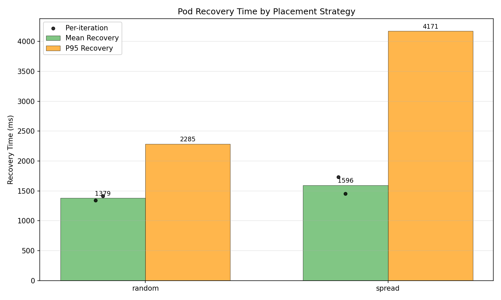
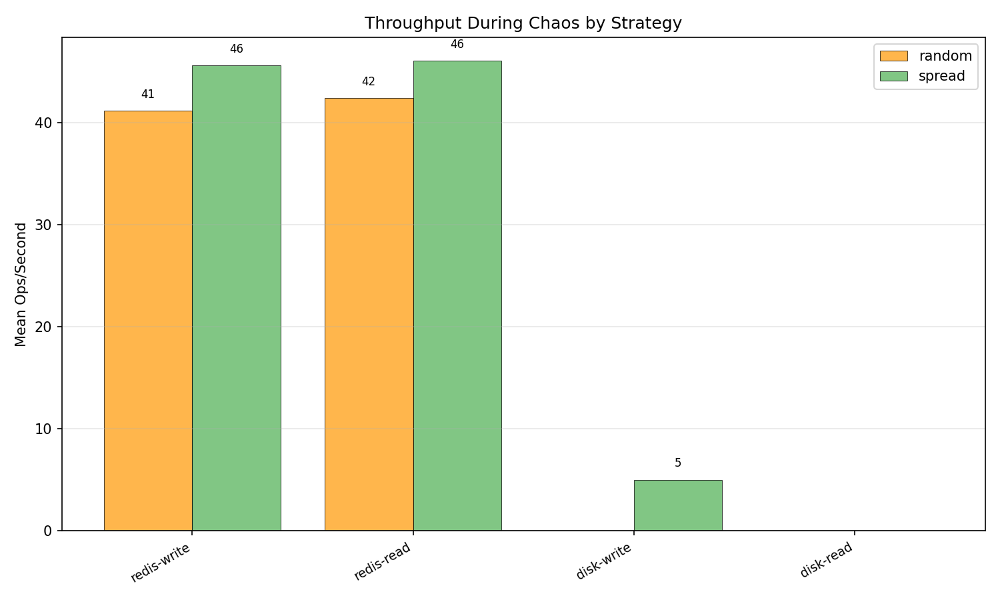
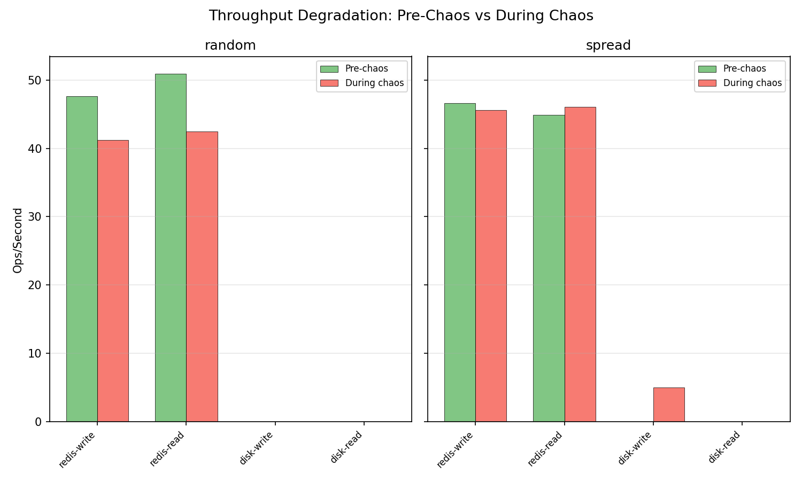
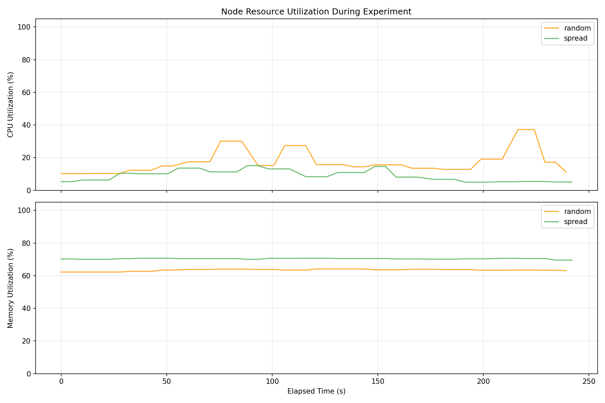
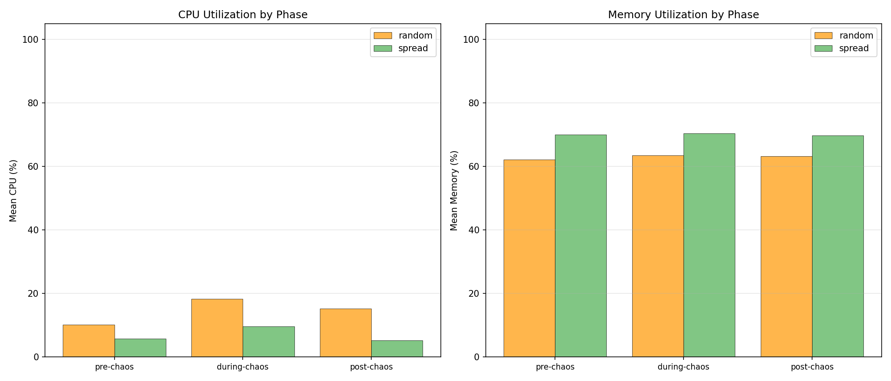
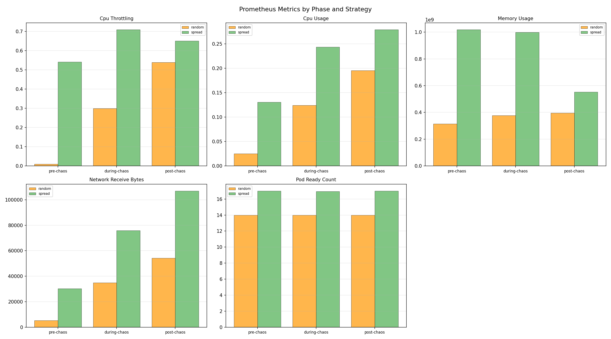

| Strategy | Runs | Avg Resilience Score | Pass Rate | Mean Recovery (ms) | Median Recovery (ms) | P95 Recovery (ms) |
|---|---|---|---|---|---|---|
| random | 2 | 0.0 | 0% | 1379.4 | 1379.4 | 2285.0 |
| spread | 2 | 0.0 | 0% | 1595.5 | 1595.5 | 4171.0 |
| Strategy | Route | Pre-Chaos Mean (ms) | During Chaos Mean (ms) | During Chaos P95 (ms) | Post-Chaos Mean (ms) | Errors During Chaos |
|---|
| Strategy | Operation | Pre-Chaos Ops/s | During Chaos Ops/s | During Chaos Latency (ms) | During Chaos Bandwidth | Post-Chaos Ops/s |
|---|---|---|---|---|---|---|
| random | redis-read | 50.9 | 42.5 | 24.82 | n/a | 48.8 |
| random | redis-write | 47.6 | 41.2 | 26.07 | n/a | 47.9 |
| random | disk-read | n/a | n/a | n/a | n/a | n/a |
| random | disk-write | n/a | n/a | n/a | n/a | n/a |
| spread | redis-read | 44.9 | 46.1 | 21.79 | n/a | 49.3 |
| spread | redis-write | 46.6 | 45.6 | 22.04 | n/a | 52.2 |
| spread | disk-read | n/a | n/a | n/a | n/a | n/a |
| spread | disk-write | n/a | 5.0 | 200.00 | 2.5 MB/s | n/a |
| Strategy | Phase | Mean CPU (%) | Mean Memory (%) | Samples |
|---|---|---|---|---|
| random | pre-chaos | 10.2 | 62.2 | 4 |
| random | during-chaos | 18.3 | 63.5 | 37 |
| random | post-chaos | 15.2 | 63.2 | 3 |
| spread | pre-chaos | 5.8 | 70.1 | 4 |
| spread | during-chaos | 9.7 | 70.4 | 38 |
| spread | post-chaos | 5.2 | 69.8 | 3 |
| Strategy | Metric | Phase | Mean | Max | Samples |
|---|---|---|---|---|---|
| random | cpu_throttling | pre-chaos | 0.0088 | 0.0088 | 2 |
| random | cpu_throttling | during-chaos | 0.2988 | 0.5256 | 18 |
| random | cpu_throttling | post-chaos | 0.5384 | 0.5406 | 2 |
| random | cpu_usage | pre-chaos | 0.0252 | 0.0253 | 2 |
| random | cpu_usage | during-chaos | 0.1244 | 0.1840 | 18 |
| random | cpu_usage | post-chaos | 0.1956 | 0.1983 | 2 |
| random | memory_usage | pre-chaos | 314118144.0000 | 315850752.0000 | 2 |
| random | memory_usage | during-chaos | 376892529.7778 | 399032320.0000 | 18 |
| random | memory_usage | post-chaos | 396343296.0000 | 396689408.0000 | 2 |
| random | network_receive_bytes | pre-chaos | 5386.5144 | 5499.3743 | 2 |
| random | network_receive_bytes | during-chaos | 34930.7267 | 52696.8310 | 18 |
| random | network_receive_bytes | post-chaos | 54238.7061 | 54893.5671 | 2 |
| random | pod_ready_count | pre-chaos | 14.0000 | 14.0000 | 2 |
| random | pod_ready_count | during-chaos | 14.0000 | 14.0000 | 18 |
| random | pod_ready_count | post-chaos | 14.0000 | 14.0000 | 2 |
| spread | cpu_throttling | pre-chaos | 0.5406 | 0.5455 | 2 |
| spread | cpu_throttling | during-chaos | 0.7087 | 0.8167 | 19 |
| spread | cpu_throttling | post-chaos | 0.6501 | 0.6503 | 2 |
| spread | cpu_usage | pre-chaos | 0.1307 | 0.1341 | 2 |
| spread | cpu_usage | during-chaos | 0.2439 | 0.2998 | 19 |
| spread | cpu_usage | post-chaos | 0.2794 | 0.2801 | 2 |
| spread | memory_usage | pre-chaos | 1019195392.0000 | 1021341696.0000 | 2 |
| spread | memory_usage | during-chaos | 999714600.4211 | 1105383424.0000 | 19 |
| spread | memory_usage | post-chaos | 553478144.0000 | 553775104.0000 | 2 |
| spread | network_receive_bytes | pre-chaos | 30330.0008 | 31134.8744 | 2 |
| spread | network_receive_bytes | during-chaos | 75826.8055 | 100112.8493 | 19 |
| spread | network_receive_bytes | post-chaos | 106847.6381 | 108071.6188 | 2 |
| spread | pod_ready_count | pre-chaos | 17.0000 | 17.0000 | 2 |
| spread | pod_ready_count | during-chaos | 16.9474 | 17.0000 | 19 |
| spread | pod_ready_count | post-chaos | 17.0000 | 17.0000 | 2 |





